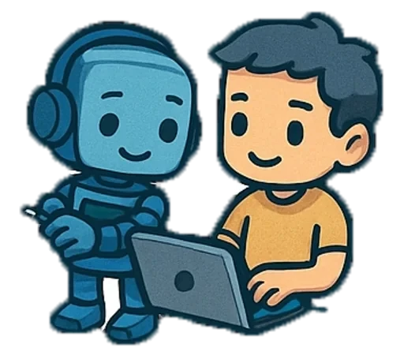

Проекты и команды
Состав команд и темы проектов добавим сюда отдельно. Раздел уже стоит в навигации, чтобы к нему было куда вернуться.

Состав команд и темы проектов добавим сюда отдельно. Раздел уже стоит в навигации, чтобы к нему было куда вернуться.